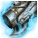
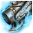
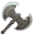
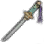
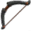
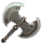
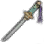
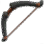
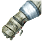
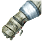

- Description: A necklace that contains the overwhelming energy of an Ogre. Ogre rings tend to be so large that other races often use them as necklaces. It can be Enhanced with the same type of necklace but if Enhancement fails, both will be lost
- Durability: 100/100- Description: Earring used in ancient Tungrade. The ancient man's power brings out your innermost potential. Enhancing is available using the same item but both items will disappear if it fails.
- Durability: 100/100- Description: A belt that still has the cold energy of Basilisk in it. An enhancement is available using the same belt, but it will be destroyed if it fails.
Item Effect: Weight Limit +80LT - Durability: 100/100- Description: Ring of the ancient Crescent Shrine. The power is still intact in this ancient artifact. An enhancement is available using the same ring, but it will be destroyed if it fails.
- Durability: 100/100- Personal Transaction Unavailable Exclusive: Witch
- Description: A Aad Sphera made from a magical design with Dandelion craftsmanship. The mythical power inside it accepts no one else but Witches. Witch’s awakening skill (Deneve’s Aad Sphera) required to use it
Enhancement Effect: AP Increase - Durability: 100/100- Personal Transaction Unavailable Exclusive: Tamer
- Description: This Celestial Bo Staff was made with Dandelion steel by Hwisa when he visited Dandelion long time ago. Afraid of his students' becoming lazy in training due to the weapon's effectiveness and destructiveness, he hid the stick somewhere and left. Tamer's awakening skill (Daru's Celestial Bo Staff) is required to use it.
Enhancement Effect: AP Increase - Durability: 100/100- Personal Transaction Unavailable Exclusive: Musa
- Description: The finest Oriental blacksmith skill and the best of Dandelion art had a rendezvous to create the best Crescent Blade. Musa's awakening skill (Haeam's Crescent Blade) is required to use this item
Enhancement Effect: AP Increase - Durability: 100/100- Personal Transaction Unavailable Exclusive: Wizard
- Description: A Godr Sphera made from a magical design with Dandelion craftsmanship. The mythical power inside it accepts no one else but Wizards. Wizard’s awakening skill (Lord Red’s Godr Sphera) required to use it
Enhancement Effect: AP Increase - Durability: 100/100- Personal Transaction Unavailable Exclusive: Warrior
- Description: A great sword manufactured in Dandelion in the past. Made of Dandelion's finest iron ingot, it used to be considered as the best weapon in existence. Warrior’s awakening skill (Goyen's Great Sword) required to use it
Enhancement Effect: AP Increase - Durability: 100/100- Personal Transaction Unavailable Exclusive: Berserker
- Description: Iron Buster made in Dandelion in the past. It was made with Dandelion steel ingot, based on the study of legendary weapons. Berserker’s awakening skill (Tantu's Iron Buster) required to use it
Enhancement Effect: AP Increase - Durability: 100/100- Personal Transaction Unavailable Exclusive: Ranger
- Description: Kamasylven Sword made in Dandelion in the past. It was made with Dandelion steel ingot and some of the oldest branches of Kamasylve. Ranger’s awakening skill (Kamasylven Sword) required to use it
Enhancement Effect: AP Increase - Durability: 100/100- Personal Transaction Unavailable Exclusive: Maehwa
- Description: Oriental Steel forged for one hundred years and the best of Dandelion craftsmanship are combined to create this finest Kerispear. Maehwa’s awakening skill (Maehwa's Kerispear) required to use it
Enhancement Effect: AP Increase - Durability: 100/100- Personal Transaction Unavailable Exclusive: Valkyrie
- Description: The best kind of Lancia made with the sacred metal schzeriel and Dandelion craftsmanship. Valkyrie’s awakening skill (Holy Lancia) required to use it
Enhancement Effect: AP Increase - Durability: 100/100- Personal Transaction Unavailable Exclusive: Kunoichi
- Description: A Sah Chakram made by an Oriental blacksmith from Ryuta with Dandelion technology. Kunoichi’s awakening skill (Crimson Sah Chakram) required to use it
Enhancement Effect: AP Increase - Durability: 100/100- Personal Transaction Unavailable Exclusive: Sorceress
- Description: Scythe made in Dandelion in the past. It was made with Dandelion steel ingot, based on the study of legendary weapons. Sorceress’s awakening skill (Cartian's Scythe) required to use it
Enhancement Effect: AP Increase - Durability: 100/100- Personal Transaction Unavailable Exclusive: Ninja
- Description: A Dandelion master from the Orient poured his heart and soul into this Sura Katana. Each of the six swords used to have names, but any record associated with it is lost. Ninja’s awakening skill (Narusawa’s Sura Katana) is required to use this weapon
Enhancement Effect: AP Increase - Durability: 100/100- Personal Transaction Unavailable Exclusive: Dark Knight
- Description: A Vediant that combines Dandelion skill and advanced theory of Spirits. It performs strong power by completely controlling the power of Spirit. Dark Knight’s awakening skill (Imperious Vediant) is required to use this weapon
Enhancement Effect: AP Increase - Durability: 100/100- Personal Transaction Unavailable Exclusive: Mystic
- Description: (To be translated)
Enhancement Effect: AP Increase - Durability: 100/100- Personal Transaction Unavailable Exclusive: Striker
- Description: Gardbrace made in Dandelion in the past. Due to Dandelion's ingot iron, this used to be regarded as the ultimate weapon. Striker's awakening skill (Enlightened Gardbrace) is required to use this weapon
Enhancement Effect: AP Increase - Durability: 100/100- Personal Transaction Unavailable Exclusive: Sorceress
Enhancement - Empty Slot - Empty Slot
- Description: An amulet that has been filled with the energy of Evil Lord Kzarka. Its evil energy increases the speed of attacks.
Item Effect: Casting Speed +3 Enhancement Effect: Increased AP, Accuracy - Durability: 100/100- Personal Transaction Unavailable Exclusive: Berserker
Enhancement - Empty Slot - Empty Slot
- Description: An axe that has been filled with the energy of Evil Lord Kzarka. Its evil energy increases the speed of attacks.
Item Effect: Attack Speed +3 Enhancement Effect: Increased AP, Accuracy - Durability: 100/100- Personal Transaction Unavailable Exclusive: Musa, Maehwa
Enhancement - Empty Slot - Empty Slot
- Description: A blade that has been filled with the energy of Evil Lord Kzarka. Its evil energy increases the speed of attacks.
Item Effect: Attack Speed +3 Enhancement Effect: Increased AP, Accuracy - Durability: 100/100- Personal Transaction Unavailable Exclusive: Ranger
Enhancement - Empty Slot - Empty Slot
- Description: A longbow that has been filled with the energy of Evil Lord Kzarka. Its evil energy increases the speed of attacks.
Item Effect: Attack Speed +3 Enhancement Effect: Increased AP, Accuracy - Durability: 100/100- Personal Transaction Unavailable Exclusive: Warrior, Valkyrie
Enhancement - Empty Slot - Empty Slot
- Description: A longsword that has been filled with the energy of Evil Lord Kzarka. Its evil energy increases the speed of attacks.
Item Effect: Attack Speed +3 & Casting Speed +3 Enhancement Effect: Increased AP, Accuracy - Durability: 100/100- Personal Transaction Unavailable Exclusive: Tamer, Kunoichi, Ninja
Enhancement - Empty Slot - Empty Slot
- Description: A Shortsword that has been filled with the energy of Evil Lord Kzarka. Its evil energy increases the speed of attacks.
Item Effect: Attack Speed +3 Enhancement Effect: Increased AP, Accuracy - Durability: 100/100- Personal Transaction Unavailable Exclusive: Wizard, Witch
Enhancement - Empty Slot - Empty Slot
- Description: A staff that has been filled with the energy of Evil Lord Kzarka. Its evil energy increases the speed of attacks.
Item Effect: Casting Speed +3 Enhancement Effect: Increased AP, Accuracy - Durability: 100/100- Personal Transaction Unavailable Exclusive: Dark Knight
Enhancement - Empty Slot - Empty Slot
- Description: A Kriegemesser possessed with the energy of evil god Kzarka. Its evil energy increases the speed of attacks.
Item Effect: Attack Speed Level +3 Enhancement Effect: AP & Accuracy Increase - Durability: 100/100- Personal Transaction Unavailable Exclusive: Striker
Enhancement - Empty Slot - Empty Slot
- Description: A Gauntlet that has been filled with the energy of Evil Lord Kzarka. Its evil energy increases the speed of attacks.
Item Effect: Attack Speed Level +3 Enhancement Effect: AP & Accuracy Increase - Durability: 100/100- Personal Transaction Unavailable Exclusive: Sorceress
Enhancement - Empty Slot - Empty Slot
- Description: An amulet used by Liverto, leader of the mercenaries in Serendia.
Item Effect: Crtiical Hit Rate +3 Enhancement Effect: Increased AP, Accuracy - Durability: 100/100- Personal Transaction Unavailable Exclusive: Berserker
Enhancement - Empty Slot - Empty Slot
- Description: An axe used by Liverto, leader of the mercenaries in Serendia.
Item Effect: Crtiical Hit Rate +3 Enhancement Effect: Increased AP, Accuracy - Durability: 100/100- Personal Transaction Unavailable Exclusive: Musa, Maehwa
Enhancement - Empty Slot - Empty Slot
- Description: A blade used by Liverto, leader of the mercenaries in Serendia.
Item Effect: Crtiical Hit Rate +3 Enhancement Effect: Increased AP, Accuracy - Durability: 100/100- Personal Transaction Unavailable Exclusive: Ranger
Enhancement - Empty Slot - Empty Slot
- Description: A longbow used by Liverto, leader of the mercenaries in Serendia.
Item Effect: Crtiical Hit Rate +3 Enhancement Effect: Increased AP, Accuracy - Durability: 100/100- Personal Transaction Unavailable Exclusive: Warrior, Valkyrie
Enhancement - Empty Slot - Empty Slot
- Description: A longsword used by Liverto, leader of the mercenaries in Serendia.
Item Effect: Crtiical Hit Rate +3 Enhancement Effect: Increased AP, Accuracy - Durability: 100/100- Personal Transaction Unavailable Exclusive: Tamer, Kunoichi, Ninja
Enhancement - Empty Slot - Empty Slot
- Description: A Shortsword used by Liverto, leader of the mercenaries in Serendia.
Item Effect: Crtiical Hit Rate +3 Enhancement Effect: Increased AP, Accuracy - Durability: 100/100- Personal Transaction Unavailable Exclusive: Wizard, Witch
Enhancement - Empty Slot - Empty Slot
- Description: A staff used by Liverto, leader of the mercenaries in Serendia.
Item Effect: Crtiical Hit Rate +3 Enhancement Effect: Increased AP, Accuracy - Durability: 100/100- Personal Transaction Unavailable Exclusive: Dark Knight
Enhancement - Empty Slot - Empty Slot
- Description: A Kriegsmesser used by Liverto, a leader of mercenaries in Serendia.
Item Effect: Crtiical Hit Rate +3 Enhancement Effect: Increased AP, Accuracy - Durability: 100/100- Personal Transaction Unavailable Exclusive: Striker
Enhancement - Empty Slot - Empty Slot
- Description: A Gauntlet used by Liverto, leader of mercenaries in Serendia.
Item Effect: Crtiical Hit Rate +3 Enhancement Effect: Increased AP, Accuracy - Durability: 100/100- Personal Transaction Unavailable
Enhancement - Empty Slot - Empty Slot
- Description: Helmet worn by Giath. You can still feel its unremitting vitality. Put on 3 or more pieces for a set effect (Red Nose's Armor/Dim Tree Spirit's Armor, Bheg's Gloves, Muskan's Shoes)
Item Effect: Max HP +100 - 3-Piece Set Effect: Max Stamina +200 - 4-Piece Set Effect: Attack Speed +1 & Casting Speed +1 - Durability: 100/100- Personal Transaction Unavailable
Enhancement - Empty Slot - Empty Slot
- Description: Armor of Dim Tree Spirit. You can feel the power of nature in it. Put on 3 or more pieces for a set effect (Helmet of Giath, Bheg's Gloves, Muskan's Shoes)
Item Effect: Max HP +200 & Max MP/WP/SP +100 - 3-Piece Set Effect: Max Stamina +200 - 4-Piece Set Effect: Attack Speed +1 & Casting Speed +1 - Durability: 100/100- Personal Transaction Unavailable
Enhancement - Empty Slot - Empty Slot
- Description: The armor worn by Red Nose. Its wearer’s recovery power increases significantly. -Equipping 3 or more parts will trigger the set effect (Giath's Helmet, Bheg's Gloves, Muskan's Shoes)
Item Effect: Increased HP Recovery & Max MP/WP/SP +100 - 3-Piece Set Effect: Max Stamina +200 - 4-Piece Set Effect: Attack Speed +1 & Casting Speed +1 - Durability: 100/100- Personal Transaction Unavailable
Enhancement - Empty Slot - Empty Slot
- Description: Gloves of Bheg. It adds sharpness to attack of its wearer. Put on 3 or more pieces for a set effect (Giath's Helmet, Red Nose's Armor/Dim Tree Spirit's Armor, Muskan's Shoes)
Item Effect: Increased Accuracy & effect increases during Enhancement - 3-Piece Set Effect: Max Stamina +200 - 4-Piece Set Effect: Attack Speed +1 & Casting Speed +1 - Durability: 100/100- Personal Transaction Unavailable
Enhancement - Empty Slot - Empty Slot
- Description: Shoes of Muskan. It makes your footsteps feel even lighter. Put on 3 or more pieces for a set effect (Giath's Helmet, Red Nose's Armor/Dim Tree Spirit's Armor, Bheg's Gloves)
Item Effect: Increased Evasion & effect increases during Enhancement - 3-Piece Set Effect: Max Stamina +200 - 4-Piece Set Effect: Attack Speed +1 & Casting Speed +1 - Durability: 100/100


 



 







 



Character 1

* Item Enhancement chance increases as the success stack rate does.